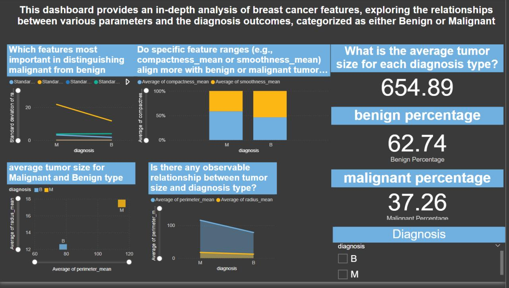

37.26%
of cases in the dataset were malignant — and tumour radius told them apart more sharply than any other measurement.
Breast cancer diagnostic parameters
Which measurements actually separate a malignant tumour from a benign one, and by how much?
- Ranked features by how cleanly they split the two diagnoses; radius and perimeter carried the most signal
- Compared value ranges for compactness and smoothness across benign and malignant cases
- Average tumour size reached 654.89 for benign cases, the larger and more frequent group at 62.74%
- Scatter and line views of radius against perimeter, with a diagnosis slicer for interactive exploration